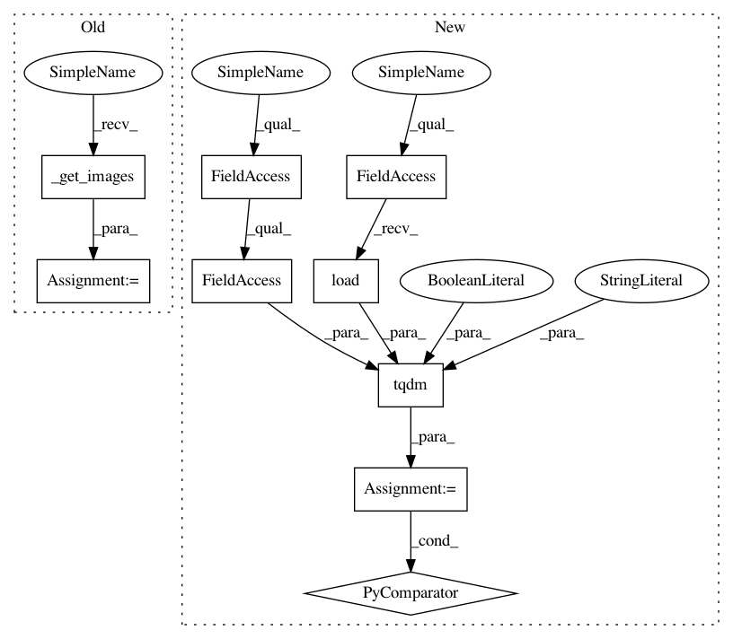

2bcb7d572ac8fdacceb56d5cbd5b05fad8c71e5e,tools/sort/sort.py,Sort,sort_hist,#Sort#,272
Before Change
def sort_hist(self):
Sort by image histogram similarity
logger.info("Sorting by histogram similarity...")
filename_list, image_list = self._get_images()
distance = cv2.HISTCMP_BHATTACHARYYA
logger.info("Calculating histograms...")
histograms = [cv2.calcHist([img], [0], None, [256], [0, 256]) for img in image_list]
After Change
// TODO We have metadata here, so we can mask the face for hist sorting
img_list = [(filename, cv2.calcHist([image], [0], None, [256], [0, 256]))
for filename, image, _ in tqdm(self._loader.load(),
desc="Calculating histograms",
total=self._loader.count,
leave=False)]
logger.info("Comparing histograms and sorting...")
img_list_len = len(img_list)
In pattern: SUPERPATTERN
Frequency: 3
Non-data size: 9
Instances
Project Name: deepfakes/faceswap
Commit Name: 2bcb7d572ac8fdacceb56d5cbd5b05fad8c71e5e
Time: 2021-03-23
Author: 36920800+torzdf@users.noreply.github.com
File Name: tools/sort/sort.py
Class Name: Sort
Method Name: sort_hist
Project Name: deepfakes/faceswap
Commit Name: 2bcb7d572ac8fdacceb56d5cbd5b05fad8c71e5e
Time: 2021-03-23
Author: 36920800+torzdf@users.noreply.github.com
File Name: tools/sort/sort.py
Class Name: Sort
Method Name: sort_hist_dissim
Project Name: deepfakes/faceswap
Commit Name: 2bcb7d572ac8fdacceb56d5cbd5b05fad8c71e5e
Time: 2021-03-23
Author: 36920800+torzdf@users.noreply.github.com
File Name: tools/sort/sort.py
Class Name: Sort
Method Name: sort_blur